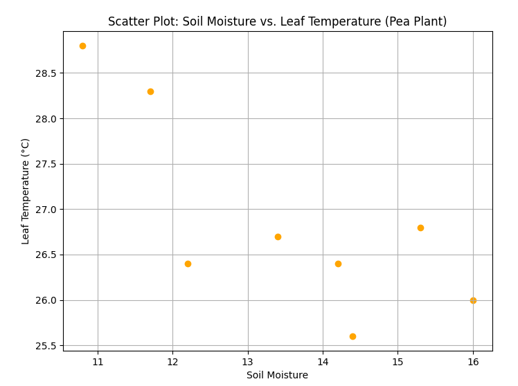

| Day | Soil Moisture | Leaf Temperature | pH |
|---|---|---|---|
| Day 1 | 16 | 26 | 6.3 |
| Day 2 | 15.3 | 26.8 | 6.7 |
| Day 3 | 12.2 | 26.4 | 6.72 |
| Day 4 | 14.4 | 25.6 | 5.45 |
| Day 5 | 11.7 | 28.3 | 5.34 |
| Day 6 | 10.8 | 28.8 | 5.87 |
| Day 7 | 13.4 | 26.7 | 5.7 |
| Day 8 | 14.2 | 26.4 | 6.1 |
Threshold: Around 14.2% Here Threshold is observed at 14.2% because the plant is able to absorb water and maintain its temperature.
Absorption Capacity:
On observing the above points pea plant has a dynamic water absorption capacity, responding to changes in environmental conditions. The absorption capacity of this plant is compartively high than Tumeric plant and lower tha the golden eye.We can observe clear changes in temperature with in a particular span of time.
Temperature Resilience and Adaptivity:
The Pea Plant exhibits high temperature resilience, maintaining a relatively stable temperature despite changes in soil moisture levels. This resilience is a positive indicator of the plant's health and adaptability to varying environmental conditions.
Leaf Temperature vs. Soil Moisture:
Leaf Temperature vs. pH :
Response lag:
Here on analysing the short term data we get to see that response lag is higher than that of the response lag for the golden eye.
Moisture Utilization Efficiency:
Moisture Utilization Efficiency= Change in leaf temperature/Change in soil moisture
Here there are more negative values which means plant shows cooling affect on incresing the soil moisture and these values vary between -2.667 to 7.75 which means this plant is showing some unpresictable changes
Ideal Moisture Range: : 13.5-14%
Ideal pH Range: : 6-7.5
Days 2 to 6 represent the optimal conditions for Curculigo orchioides, with the ideal
moisture
range and stable leaf temperature.
Day 8 marks a critical point where the soil moisture level reaches 14.2, potentially leading
to
decreased water absorption and an impact on temperature regulation.